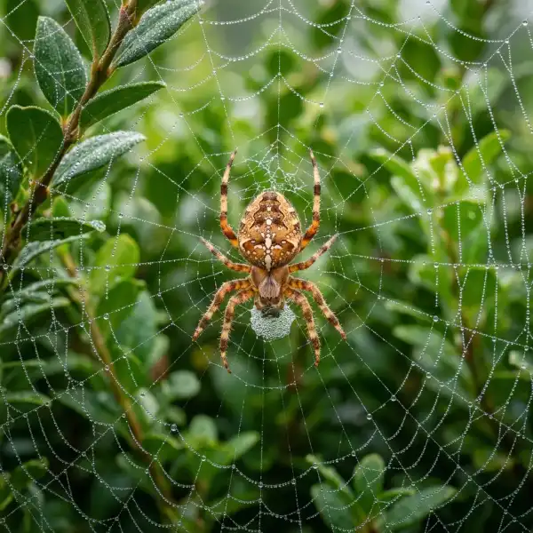

Common Spider Species Found
in Huntington Park
Several spider species are commonly encountered around homes and businesses in the area.

House Spiders
Nuisance / CommonHouse spiders are frequently found indoors around corners, ceilings, garages, and storage areas. While generally harmless, their webs can become a nuisance when populations increase.

Jumping Spiders
Active Hunter / HarmlessJumping spiders are known for their quick movement and excellent vision. They are often found around windows, doors, and exterior walls.

Orb Weaver Spiders
Beneficial / OutdoorOrb weavers create large circular webs in gardens, landscaping, fences, and outdoor structures.

Cellar Spiders
Harmless / IndoorsCellar spiders are commonly found in basements, garages, crawl spaces, and other quiet areas with limited disturbance.

Black Widow Spiders
Venomous / High RiskBlack widow spiders are among the most concerning species found in Southern California. They prefer dark, sheltered locations such as wood piles, utility boxes, sheds, and storage areas.